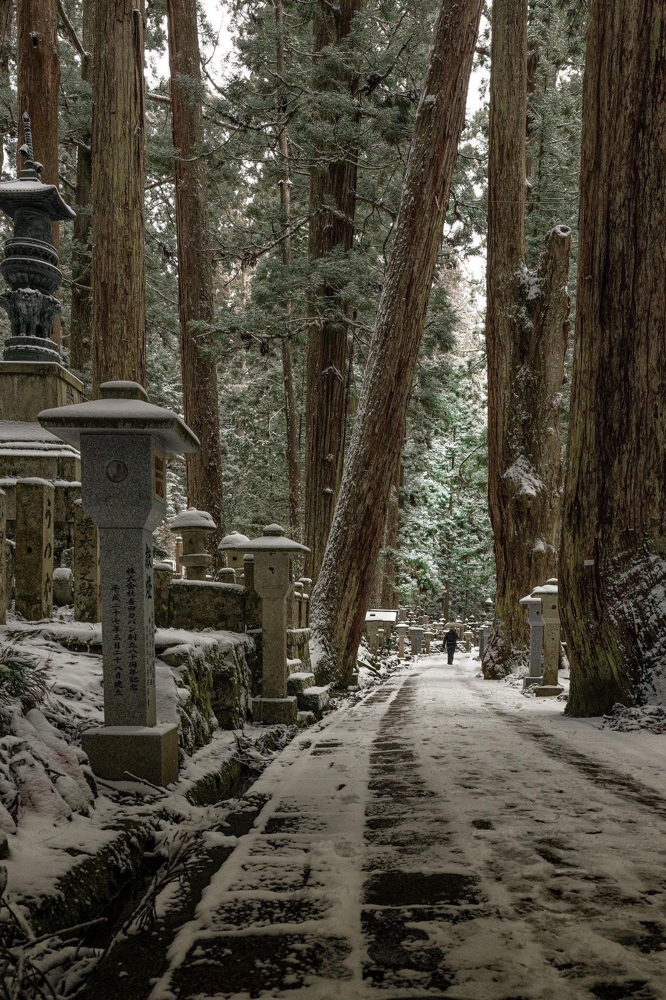

超日本
Discover ancient temples, modern cities, and breathtaking landscapes
Exlore destination
— Ancient Japanese ProverbIn Japan, tradition dances with innovation, creating a harmony unlike anywhere else on Earth.
Why Visit Japan?
From the neon-lit streets of Tokyo to the serene temples of Kyoto, Japan offers an unforgettable journey through time and culture. Experience world-class cuisine, stunning natural beauty, and the warmth of Japanese hospitality.
Rich Culture
Temples, shrines, and traditions
Rich Culture
Temples, shrines, and traditions
Rich Culture
Temples, shrines, and traditions